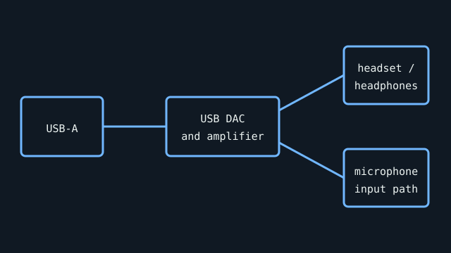

[ INDIVIDUAL COMPONENT // SOUND HARDWARE ]
Creative Sound Blaster PLAY! 3
A compact USB DAC/amplifier for headphone and headset use. The Creative support record confirms PC and Mac use; enhanced effects depend on the optional Sound Blaster software and supported host OS.

Specifications
| Product ID | Creative Sound Blaster PLAY! 3 USB DAC and amplifier. |
|---|---|
| Bus | USB-A host connection; USB bus-powered. The plug is USB-A rather than a USB-C port. |
| Connectors / I/O | 3.5 mm headphone/headset and microphone connections; use the model guide and supplied splitter/adapter for the exact headset wiring arrangement. |
| Conversion | Creative identifies the device as a USB DAC/headphone amplifier but the accessible product specification does not publish a converter IC or full ADC/DAC operating table; no sample-rate or chip claim is inferred here. |
| Drivers / OS | Creative lists PC and Mac compatibility. Optional Sound Blaster Control Panel features require Creative software; OS version support is package-specific. No Linux support is asserted by this record. |
| Variant compatibility | PLAY! 3 is distinct from PLAY! 2 and PLAY! 4. Check the model marking and headset plug type; audio routing can differ between analog mic and 4-pole headset configurations. |
Service & preservation
Keep the adapter, supplied splitter, and original software notes together. Inspect the USB-A plug for looseness and the 3.5 mm sockets for debris before use. Record separate headphone and microphone tests and preserve a copy of the last matching Creative installer.
Primary sources
- Creative — Sound Blaster PLAY! 3 product pageManufacturer source identifying this USB DAC/amplifier and host platform compatibility.
- Creative — PLAY! 3 support and downloadsManufacturer support/driver repository; check release notes for host OS and control-panel feature support.